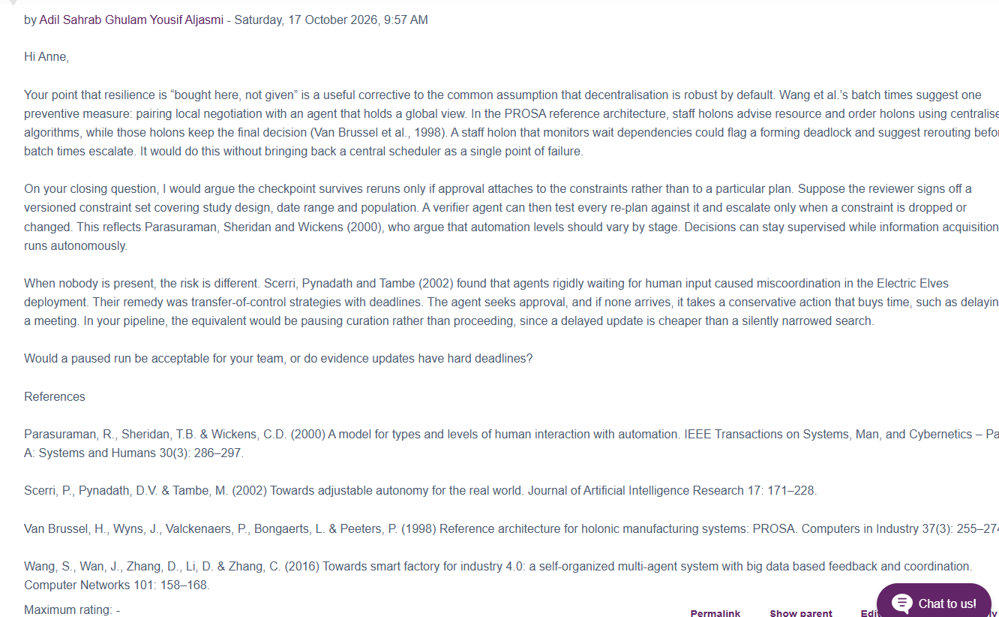
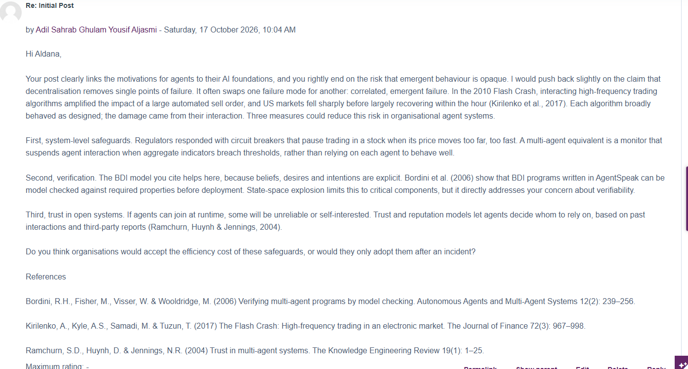
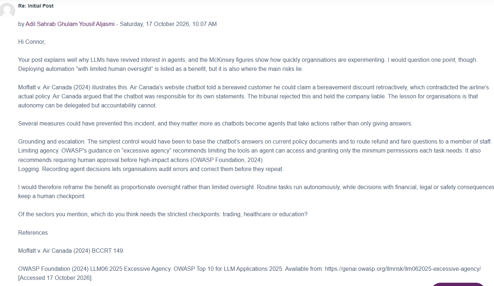
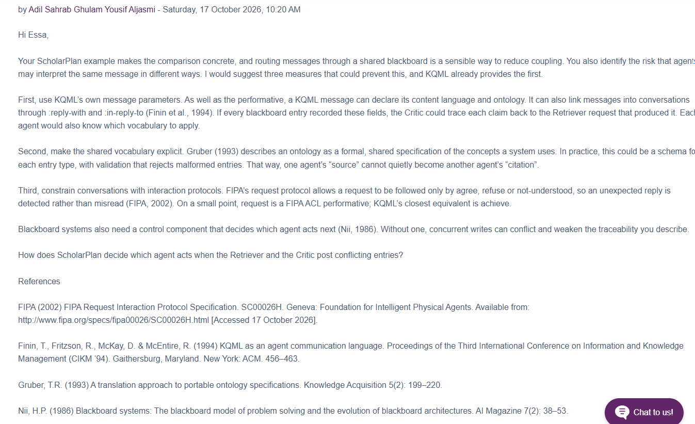
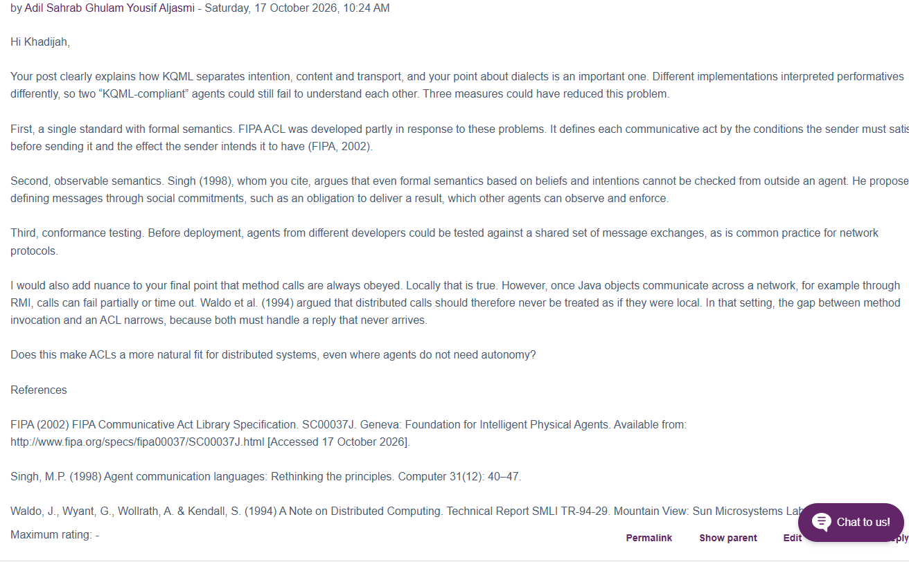
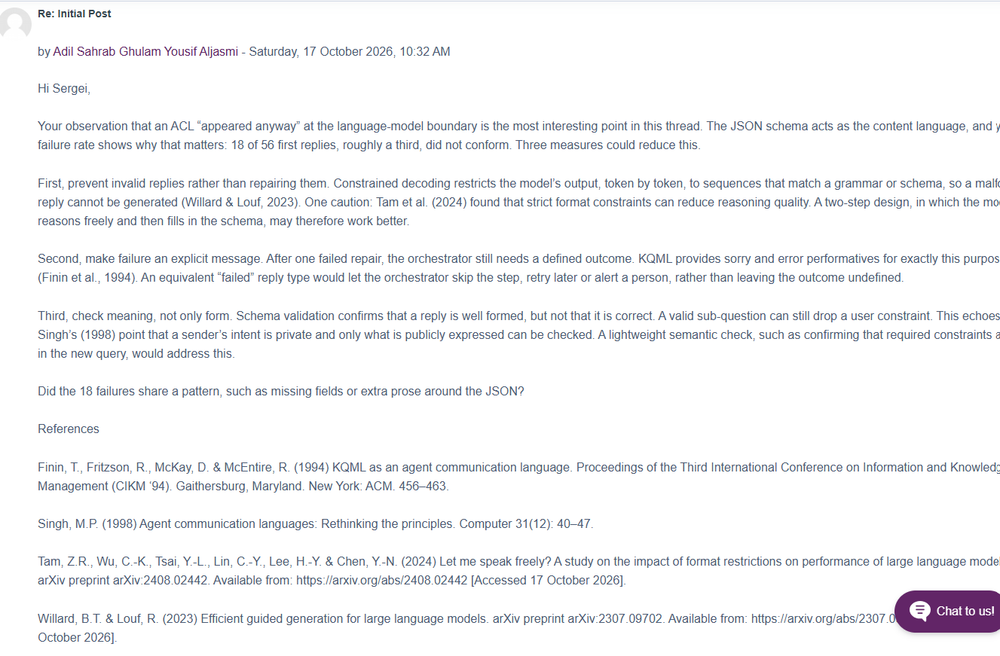
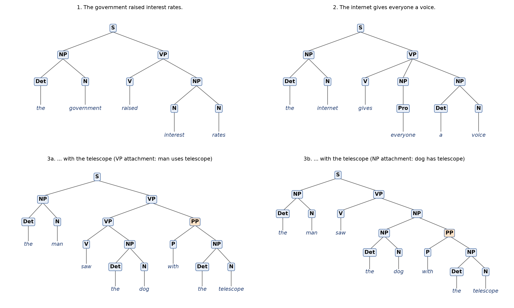

Unit-by-unit evidence: discussion posts, wiki contributions, exercises and reflections.
Jump to: Unit 1 Unit 2 Unit 3 Unit 4 Unit 5 Unit 6 Unit 7 Unit 8
Unit 1: Introduction to Agent-Based Computing
Collaborative Discussion 1 · Initial post
The unit looked at the trends in computing behind the rise of agents and at what makes a program autonomous. In my initial post I argued that agents emerged from five long-term trends in computing, namely ubiquity, interconnection, intelligence, delegation and human-orientation (Wooldridge, 2009). I also argued that agent-oriented decomposition suits complex, distributed problems (Jennings, 2000). I set out four organisational benefits (robustness and scalability, flexibility, decision support and efficiency) and ended with a caution: interactions between autonomous agents can produce unpredictable outcomes, so agents should be used where problems are genuinely distributed and dynamic.
Reflection (Rolfe et al., 2001)
What? I wrote my first post on why agent-based systems emerged and what they offer organisations, building it mainly on foundational sources.
So what? The benefits I listed came from the literature and were stated in general terms. Only the final paragraph asked when they might not hold. Looking back, the post described agents well but did not yet test the claims against real cases.
Now what? I want my later posts to pair each claimed benefit with evidence of where it fails. This became the main thread of the discussion in Units 2 and 3.
Unit 2: Introducing First Order Logic
Collaborative Discussion 1 · Peer responses
The seminar introduced first-order logic, the notation behind agents' knowledge representation, which I later used directly when writing KIF content in Unit 6. In the discussion I replied to three peers, each time proposing preventive measures rather than only agreeing:
- Resilience of decentralised control: an advisory agent with a global view, like the staff holons in the PROSA architecture (Van Brussel et al., 1998), that can warn of deadlock without becoming a central point of failure. I also suggested transfer-of-control strategies with deadlines for when no human is available to approve (Scerri, Pynadath & Tambe, 2002).
- Emergent failure: using the 2010 Flash Crash (Kirilenko et al., 2017), I argued that decentralisation swaps one failure mode for another. I proposed system-level circuit breakers, model checking of BDI programs before deployment (Bordini et al., 2006), and trust and reputation models for open systems (Ramchurn, Huynh & Jennings, 2004).
- Accountability: using Moffatt v. Air Canada (2024), where the airline was held liable for its chatbot's advice, I argued for proportionate rather than limited oversight, with least-privilege tool access (OWASP Foundation, 2024).

Peer response 1 (resilience)
Peer response 2 (emergent failure)
Peer response 3 (accountability)Reflection (Rolfe et al., 2001)
What? I replied to three peers and grounded each reply in a concrete incident or architecture.
So what? Answering other people's arguments pushed me from describing benefits to designing safeguards. Each reply ended with a measure that could actually be built: a monitor, a verification step or a permission limit. The Air Canada case was especially useful, because it showed that autonomy can be delegated but accountability cannot.
Now what? I will treat oversight as something to design in proportion to risk. In my own implementation (Unit 11) this became hard limits that code enforces rather than the language model: a step budget, a cap of three re-plans per subtask and a deterministic fallback.
Unit 3: Agent Architectures
Collaborative Discussion 1 · Summary post
The unit compared symbolic, reactive and belief-desire-intention (BDI) architectures. In my summary post I brought the discussion together. Peers had added the main agent models, namely reactive architectures that reject symbolic world models (Brooks, 1991), BDI agents (Rao & Georgeff, 1995) and hybrids, so the right choice depends on the environment. My main revision was that the benefits of agents are conditional, and the summary listed the safeguards our exchanges had identified. I concluded that autonomy is a design parameter rather than a default.
Reflection (Rolfe et al., 2001)
What? I summarised a discussion that had changed my original position.
So what? Comparing my initial post with the summary shows the change: I started by listing benefits and finished by stating the conditions under which they hold. Reading peers' choices of agent model also made clear that architecture selection is a trade-off between responsiveness and deliberation, not a matter of picking the newest approach.
Now what? When I design an agent, I will justify the architecture against the environment it must work in. Our team did this in Unit 6, choosing a hybrid design with one deliberative planner and reactive specialists.
Unit 4: Hybrid Agent Architectures
Wiki contribution · “Layered Architecture”
I wrote the glossary entry on layered architectures, the most common way to build a hybrid agent. It contrasts horizontal layering (every layer sees input and proposes actions, as in TouringMachines (Ferguson, 1992), and needs a mediator to resolve conflicts) with vertical layering (control passes through the layers, as in InteRRaP (Müller, 1996), so there are fewer interactions but less fault tolerance). It also mentions the three-layer (3T) architecture used in robotics (Gat, 1998), and notes that layered designs can be hard to verify because behaviour emerges from interactions between layers.

Reflection (Rolfe et al., 2001)
What? I produced a concise, referenced wiki entry explaining how hybrid agents are organised into layers.
So what? Writing for a shared glossary forced me to explain the trade-offs precisely. Horizontal layering risks a mediator bottleneck, while vertical layering fails if any one layer fails. The same tension appeared in our team design: the shared blackboard decouples the agents but concentrates risk in one component.
Now what? In future designs I will name the single point of failure explicitly and state how it is mitigated. Our design proposal did this for the blackboard, using atomic SQLite transactions and a bounded step budget.
Unit 5: Agent Communication
Collaborative Discussion 2 · Initial post
The unit introduced speech act theory, ontologies and agent communication languages (ACLs). The discussion asked how ACLs such as KQML compare with method invocation in languages like Java or Python. In my initial post I explained that KQML separates what a message is meant to do (its performative, such as ask-one or tell) from what it is about. Performatives come from speech act theory, which treats utterances as actions (Searle, 1969), and KQML organises messages into content, message and communication layers (Finin et al., 1994).
- Advantages: interoperability between heterogeneous agents; autonomy, because a performative is a request that the receiver may refuse, unlike a method call (Wooldridge, 2009); and loose coupling through facilitators.
- Disadvantages: ambiguous semantics in the original specification (Labrou, Finin & Peng, 1999); mental-state semantics that an observer cannot verify (Wooldridge, 2000), for which Singh (1998) proposed social commitments instead; and the overhead of parsing and shared ontologies.
- Today: the debate has returned with LLM agents. Anthropic's Model Context Protocol standardises tool access, which resembles method invocation, while Google's Agent2Agent protocol gives tasks a lifecycle in which the remote agent can fail or ask for more input, echoing KQML (Anthropic, 2024; Google, 2025).
I concluded that ACLs are worth their overhead only where autonomy and heterogeneity are genuine requirements.
Reflection (Rolfe et al., 2001)
What? I compared ACLs with method invocation and linked the comparison to current LLM agent protocols.
So what? The clearest way to frame the difference was to ask who decides. With method invocation the caller decides, while with an ACL the receiver decides whether to act. Finding the same design question in protocols released in 2024 and 2025 showed me that agent communication theory is not only historical.
Now what? When I design interfaces between agents, I will first decide whether the receiver is genuinely independent. If it is, I will use structured messages with explicit refusal and failure replies rather than plain function calls.
Unit 6: Creating Agent Dialogues
Collaborative Discussion 2 · Peer responses · e-Portfolio activity (KQML and KIF) · team design proposal
Discussion 2: peer responses
I replied to three peers, each time proposing measures against the weaknesses they had raised:
- Misinterpretation in a blackboard design: use KQML's own parameters (
:language,:ontology,:reply-withand:in-reply-to) so that every claim can be traced (Finin et al., 1994). Make the shared vocabulary an explicit ontology with validation (Gruber, 1993), constrain conversations with interaction protocols (FIPA, 2002b), and add a control component that decides which agent acts next (Nii, 1986). - Incompatible KQML dialects: a single standard with formal semantics (FIPA, 2002a), observable social-commitment semantics (Singh, 1998) and conformance testing. I also noted that remote method calls can fail partially, which narrows the gap between method invocation and ACLs (Waldo et al., 1994).
- LLM replies breaking a JSON schema (18 of 56 first replies in the peer's system): constrained decoding (Willard & Louf, 2023), with the caution that strict formats can reduce reasoning quality (Tam et al., 2024); an explicit “failed” reply, like KQML's
sorryanderror; and semantic checks, because a valid format does not guarantee correct meaning.

Peer response 1 (blackboard design)
Peer response 2 (KQML dialects)
Peer response 3 (LLM output schema)Activity: creating agent dialogues in KQML and KIF
Task: write a KQML/KIF dialogue in which Alice, a procurement agent, asks Bob, a warehouse stock agent, about the available stock of 50-inch televisions and their number of HDMI slots.
I wrote an eight-message dialogue. Alice uses ask-all to find every 50-inch model and its stock, ask-if with a KIF quantifier to check that at least 100 units are available, and ask-one to retrieve the HDMI slots for each model. Bob answers each with tell, linked to the question by :in-reply-to. To check that the dialogue is well formed, I built a small Python simulation in which Bob answers from a KIF knowledge base (the stock figures are illustrative). I then ran eight experiments:
- An unknown model returned
sorry: Bob understood the question but had no answer. - A malformed message, a different ontology or a misspelt relation (
hdmi-slotsinstead ofhdmi-ports) returnederror. ask-onereturned only one of the two 50-inch models, so a procurement agent using it would underestimate stock.- After a simulated shipment, the same
ask-ifchanged fromtelltountell.

Figure: KQML message sequence between Alice and Bob, generated from the simulation.
Reflection (Rolfe et al., 2001)
What? I replied to three peers on the weaknesses of ACLs, then wrote and tested my own KQML/KIF dialogue.
So what? The discussion and the activity pointed to the same lesson: a shared protocol fixes the form of messages, not their meaning. In the discussion I recommended explicit ontologies and failure replies. In my simulation, a misspelt relation produced an error even though both agents used KQML and KIF (Finin et al., 1994). The JSON-schema case showed the same problem returning at the boundary with language models, which our ScholarPlan design handled by requiring schema-valid JSON between agents.
Now what? In team projects I will agree shared message schemas and vocabularies early and test them with edge cases, rather than assuming a common protocol is enough.
Unit 7: Collaborative Discussion 2 – Summary
Collaborative Discussion 2 · Summary post
My summary drew the discussion together under two findings. First, the boundary between the two approaches is less sharp than I had suggested. Method calls across a network face partial failure and timeouts, much as ACL messages do (Waldo et al., 1994). One peer's team chose plain Python calls but still recreated an ACL at the language-model boundary, with a JSON schema acting as the content language, and A2A's task lifecycle follows the same logic (Google, 2025). Second, semantics remains the central weakness. I listed the measures we had identified: recording ontology and conversation links in every message (Finin et al., 1994), interaction protocols that restrict valid replies (FIPA, 2002b), constrained decoding with its trade-offs (Willard & Louf, 2023; Tam et al., 2024), and explicit failure messages with semantic checks (Singh, 1998).
Reflection (Rolfe et al., 2001)
What? I summarised a discussion that reframed my original comparison.
So what? My initial post treated ACLs and method invocation as competing technologies. By the end I saw the choice as one of trust boundaries. Method invocation suits components under one design authority, while ACL-style structure earns its overhead where the receiver is independent and its replies cannot be trusted. Language models belong in the second group, even inside a single system.
Now what? I applied this directly in my Unit 11 implementation. Every Planner decision in ScholarPlan must pass a JSON schema and then a semantic check before the system acts on it, and a deterministic fallback takes over if the model fails twice.
Unit 8: Creating Parse Trees
e-Portfolio activity · constituency parsing
Task: create constituency parse trees for The government raised interest rates, The internet gives everyone a voice and The man saw the dog with the telescope.
Rather than only drawing the trees, I wrote a small context-free grammar and a parser that returns every tree the grammar allows, and then plotted them. The first two sentences have one tree each: interest rates is a noun compound, and gives takes two objects. The third sentence has two trees. If with the telescope attaches to the verb phrase, the man uses the telescope; if it attaches to the noun phrase, the dog has it. In experiments, removing any one grammar rule left a sentence with no parse. Adding further prepositional phrases increased the number of trees from 1 to 429, exactly the Catalan numbers reported by Church & Patil (1982).

Figure: parse trees 1, 2, 3a (verb-phrase attachment) and 3b (noun-phrase attachment).
Reflection (Rolfe et al., 2001)
What? I produced the trees and verified them with a parser of my own.
So what? The third sentence showed that syntax alone cannot decide meaning. A language-processing agent needs context or statistics about which words usually go together to choose between parses (Hindle & Rooth, 1993). The growth experiment showed how quickly this becomes a practical problem.
Now what? When an agent reads natural language, I will not treat a single parse as the truth. I will design it to detect ambiguity and resolve it with context, or to ask for clarification.
References
Anthropic (2024) Introducing the Model Context Protocol. Available from: https://www.anthropic.com/news/model-context-protocol [Accessed 18 October 2026].
Bordini, R.H., Fisher, M., Visser, W. & Wooldridge, M. (2006) Verifying multi-agent programs by model checking. Autonomous Agents and Multi-Agent Systems 12(2): 239–256.
Brooks, R.A. (1991) Intelligence without representation. Artificial Intelligence 47(1–3): 139–159.
Church, K. & Patil, R. (1982) Coping with syntactic ambiguity or how to put the block in the box on the table. American Journal of Computational Linguistics 8(3–4): 139–149.
Ferguson, I.A. (1992) TouringMachines: An Architecture for Dynamic, Rational, Mobile Agents. Technical Report UCAM-CL-TR-273. Cambridge: University of Cambridge Computer Laboratory.
Finin, T., Fritzson, R., McKay, D. & McEntire, R. (1994) KQML as an agent communication language. Proceedings of the Third International Conference on Information and Knowledge Management (CIKM '94). Gaithersburg, Maryland. New York: ACM. 456–463.
FIPA (2002a) FIPA Communicative Act Library Specification. SC00037J. Geneva: Foundation for Intelligent Physical Agents. Available from: http://www.fipa.org/specs/fipa00037/SC00037J.html [Accessed 18 October 2026].
FIPA (2002b) FIPA Request Interaction Protocol Specification. SC00026H. Geneva: Foundation for Intelligent Physical Agents. Available from: http://www.fipa.org/specs/fipa00026/SC00026H.html [Accessed 18 October 2026].
Gat, E. (1998) On three-layer architectures. In: Kortenkamp, D., Bonasso, R.P. & Murphy, R. (eds.) Artificial Intelligence and Mobile Robots. Menlo Park: AAAI Press. 195–210.
Google (2025) Announcing the Agent2Agent Protocol (A2A). Google for Developers Blog. Available from: https://developers.googleblog.com/en/a2a-a-new-era-of-agent-interoperability/ [Accessed 18 October 2026].
Gruber, T.R. (1993) A translation approach to portable ontology specifications. Knowledge Acquisition 5(2): 199–220.
Hindle, D. & Rooth, M. (1993) Structural ambiguity and lexical relations. Computational Linguistics 19(1): 103–120.
Jennings, N.R. (2000) On agent-based software engineering. Artificial Intelligence 117(2): 277–296.
Kirilenko, A., Kyle, A.S., Samadi, M. & Tuzun, T. (2017) The Flash Crash: High-frequency trading in an electronic market. The Journal of Finance 72(3): 967–998.
Labrou, Y., Finin, T. & Peng, Y. (1999) Agent communication languages: The current landscape. IEEE Intelligent Systems 14(2): 45–52.
Müller, J.P. (1996) The Design of Intelligent Agents: A Layered Approach. Lecture Notes in Artificial Intelligence 1177. Berlin: Springer.
Moffatt v. Air Canada (2024) BCCRT 149.
Nii, H.P. (1986) Blackboard systems: The blackboard model of problem solving and the evolution of blackboard architectures. AI Magazine 7(2): 38–53.
OWASP Foundation (2024) LLM06:2025 Excessive Agency. OWASP Top 10 for LLM Applications 2025. Available from: https://genai.owasp.org/llmrisk/llm062025-excessive-agency/ [Accessed 18 October 2026].
Ramchurn, S.D., Huynh, D. & Jennings, N.R. (2004) Trust in multi-agent systems. The Knowledge Engineering Review 19(1): 1–25.
Rao, A.S. & Georgeff, M.P. (1995) BDI agents: From theory to practice. Proceedings of the First International Conference on Multi-Agent Systems (ICMAS-95). San Francisco, 12–14 June. Menlo Park: AAAI Press. 312–319.
Rolfe, G., Freshwater, D. & Jasper, M. (2001) Critical Reflection in Nursing and the Helping Professions: A User's Guide. Basingstoke: Palgrave Macmillan.
Scerri, P., Pynadath, D.V. & Tambe, M. (2002) Towards adjustable autonomy for the real world. Journal of Artificial Intelligence Research 17: 171–228.
Searle, J.R. (1969) Speech Acts: An Essay in the Philosophy of Language. Cambridge: Cambridge University Press.
Singh, M.P. (1998) Agent communication languages: Rethinking the principles. Computer 31(12): 40–47.
Tam, Z.R., Wu, C.-K., Tsai, Y.-L., Lin, C.-Y., Lee, H.-Y. & Chen, Y.-N. (2024) Let me speak freely? A study on the impact of format restrictions on performance of large language models. arXiv preprint arXiv:2408.02442. Available from: https://arxiv.org/abs/2408.02442 [Accessed 18 October 2026].
Van Brussel, H., Wyns, J., Valckenaers, P., Bongaerts, L. & Peeters, P. (1998) Reference architecture for holonic manufacturing systems: PROSA. Computers in Industry 37(3): 255–274.
Waldo, J., Wyant, G., Wollrath, A. & Kendall, S. (1994) A Note on Distributed Computing. Technical Report SMLI TR-94-29. Mountain View: Sun Microsystems Laboratories.
Willard, B.T. & Louf, R. (2023) Efficient guided generation for large language models. arXiv preprint arXiv:2307.09702. Available from: https://arxiv.org/abs/2307.09702 [Accessed 18 October 2026].
Wooldridge, M. (2000) Semantic issues in the verification of agent communication languages. Autonomous Agents and Multi-Agent Systems 3(1): 9–31.
Wooldridge, M. (2009) An Introduction to MultiAgent Systems. 2nd ed. Chichester: John Wiley & Sons.
Full reference lists for each post are shown in the linked screenshots and notebooks.